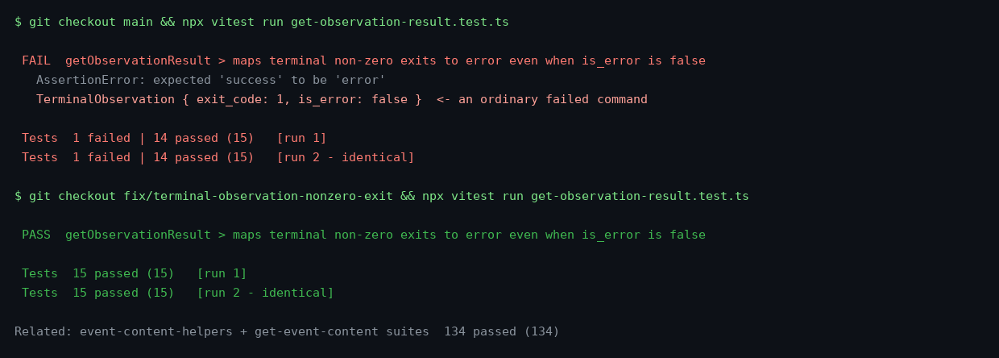

Terminal runs of __tests__/components/conversation-events/chat/event-content-helpers/get-observation-result.test.ts: failing twice on main (a TerminalObservation with exit_code 1 and is_error=false maps to "success"), passing twice with the fix.
